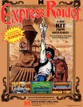

1

Express Raider
Que A dé ahora la patada (cambiado tras la prueba del 2026-11-04: antes la daba Y) y que el J2 tenga sus propios controles (en la prueba, el J2 tenía los del J1).
Botones
 | Dar un puñetazo (Botón 1) |
 | Dar una patada (Botón 2; antes la daba Y) |
 | Empezar |
 | Meter una moneda |
+  | Salir del juego |